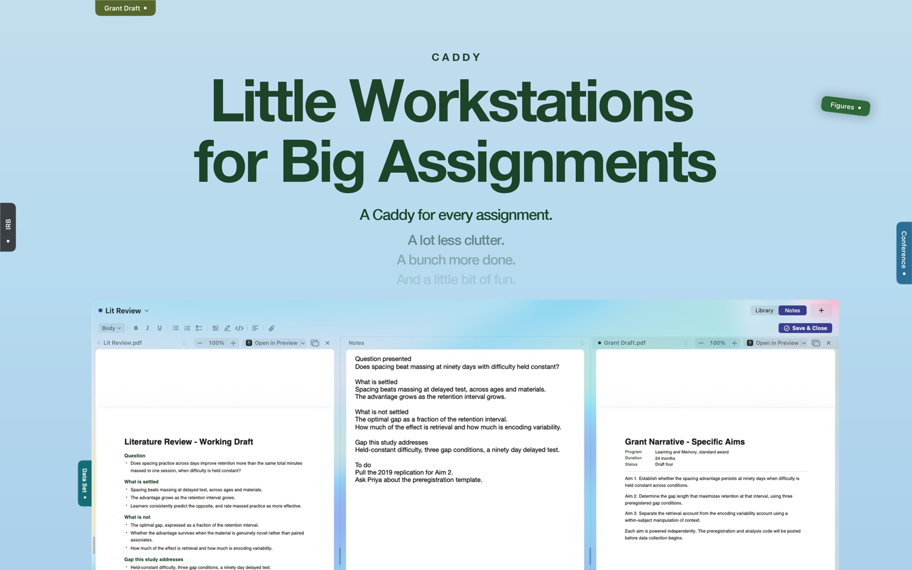
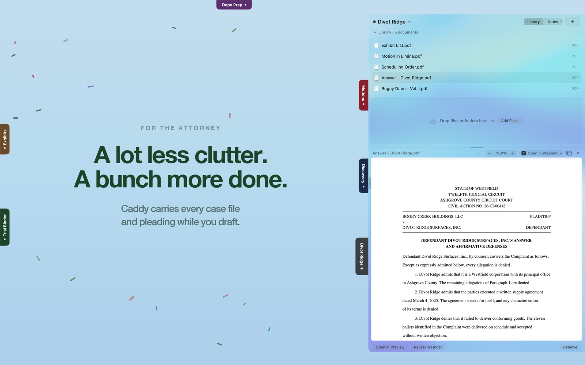
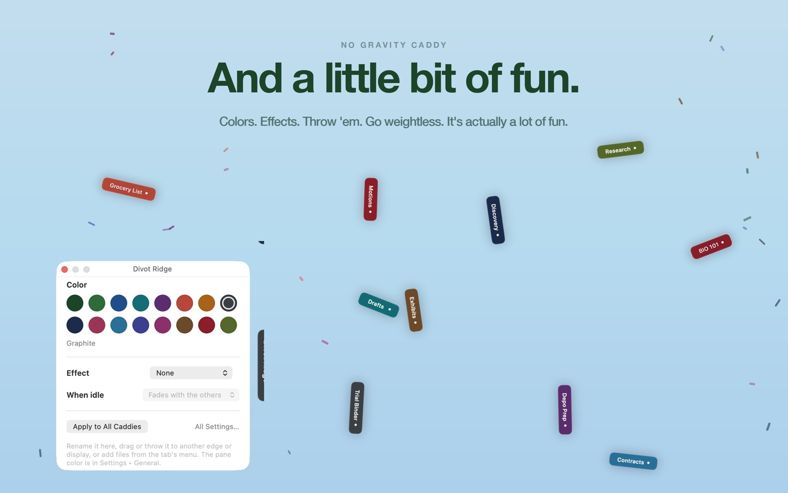

Caddy Docs
A Mac app that gives every project a pull-out tab at the edge of the screen: its files, folders, notes, documents and videos, opened when you need them and tucked away when you do not. I designed it, wrote it in Swift, built the site and the App Store listing, and shipped the first version in three and a half weeks. It is on the Mac App Store today, and a French localization followed within days of the first review.



« assez original et unique en son genre »
« Ce ne sont jamais que des étagères. Caddy est plus ambitieux, plus souple, plus personnel à l’usage, bien plus utile au quotidien. »
Bernard Le Du, VVMac Le Blog, September 2026, after forty years in the French Mac press. In English: quite original and unique of its kind; the others are merely shelves; Caddy is more ambitious, more flexible, more personal in use, far more useful day to day. Read it.